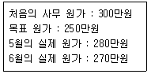
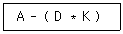
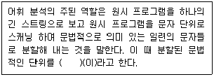
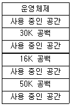

사무자동화산업기사 (2014-05-25 기출문제)
1과목: 사무자동화 시스템
1. 사무자동화시스템을 평가하는 방법에 속하지 않는 것은?
- 투자 효율 산정법
- 상대적 평가법
- 정성적 평가법
- 전사적 비교법
(정답률: 53%)

2. 다음은 사무자동화의 흐름을 나타낸 것이다. 시대별 분류방법으로 바르게 나열된 것은?
- 실무관리시대→분산처리시대→분산형 Office시대→집중처리시대→OA 도입시대→분산적 OA시대
- 실무관리시대→분산형 Office시대→집중처리시대→분산처리시대→분산적 OA시대→OA 도입시대
- 실무관리시대→OA 도입시대→집중처리시대→분산처리시대→분산형 Office시대→분산적 OA시대
- 실무관리시대→집중처리시대→분산처리시대→OA 도입시대→분산적 OA시대→분산형 Office시대
(정답률: 75%)
3. 다음 중 입력장치와 입력매체가 잘못 연결된 것은?
- 자기잉크문자판독기 - 수표
- 디지타이저 - 도면, 차트
- 바코드 판독기 - 국제제품코드
- 트랙볼 - 마이크로필름
(정답률: 74%)
4. 다음 중 사무자동화의 기본 성공요소가 아닌 것은?
- 철학
- 장비
- 제도
- 행동과학
(정답률: 60%)
5. 사진, 문자, 그림 등을 미세한 점으로 분해한 다음 이를 전기 신호로 변환시켜 전송하고 수신된 전기 신호를 원래의 정보로 재현하는 기능을 가진 화상 자료 통신기기는?
- 텔렉스
- 팩시밀리
- 텔레타이프
- 텔레텍스트
(정답률: 81%)
6. 다음 중 변동자료를 모아 한꺼번에 처리하는 자료처리 방식은?
- 일괄 처리
- 온라인 실시간 처리
- 분산 처리
- 시분할 처리
(정답률: 83%)
7. 인터넷 서비스에서 다른 컴퓨터를 자신의 컴퓨터와 같이 원격으로 사용할 수 있도록 지원해주는 것은?
- Telnet
- Archie
- FTP
(정답률: 81%)
8. 다음 중 자료저장 기기로서 종이에 인쇄된 정보를 축소 촬영한 필름에 저장하는 기기는?
- CAR(Computer Assisted Retrieval)
- COM(Computer Output Microfilm)
- 광디스크
- CD-ROM
(정답률: 77%)
9. 데이터베이스의 기본적 모형이라고 볼 수 없는 것은?
- 관계 모형
- 상호 모형
- 망 모형
- 계층 모형
(정답률: 70%)
10. 다음 중 사무자동화의 정성적 효과인 것은?
- 재고, 설비, 금리 등에 대한 직접비, 간접비의 개선
- 자료검색 시간 단축
- 시장(환경)의 변화에 신속히 대처
- 정보의 입수까지 드는 전체 비용의 절감
(정답률: 75%)
11. 공중 전기 통신 사업자에게 임차한 통신 회선에 자신의 통신망을 연결시켜 메일박스 서비스나 프로토콜 변환, 포맷 변환 등의 부가가치통신 서비스를 이용자에게 분할하여 재판매하는 통신처리망은 ?
- LAN
- WAN
- VAN
- ISDN
(정답률: 71%)
12. Windows 시스템 상에서 일본어, 중국어 등 문자수가 많은 언어로 입력하기 위해 필요한 소프트웨어는?
- OLE
- OCX
- IME
- Active X
(정답률: 74%)
13. 다음 중 데이터베이스 관리자(DBA)의 역할로 적당하지 않은 것은?
- 데이터베이스의 구성 요소를 결정
- 데이터 접근 권한을 제어
- 무결성 제약 조건을 지정
- 데이터베이스를 응용하고 외부 스키마를 처리
(정답률: 71%)
14. 사무자동화 시스템의 주요기능이 아닌 것은?
- 문서화 기능
- 집중처리 기능
- 정보 활용 기능
- 업무의 자동화 기능
(정답률: 45%)
15. 다음 중 전자상거래의 범위에 속하지 않는 것은?
- EDI(Electronic Data Interchange)
- CALS(Commerce At Light Speed)
- MIS(Marketing Information System)
- MC(Mobile Commerce)
(정답률: 50%)
16. 사무자동화 목표설정에서 각 부분별 목표 설정에 포함되지 않는 것은?
- 최종목표
- 부문 구성 목표
- 세부 목표
- 통합 목표
(정답률: 45%)
17. 다음 중 어떤 데이터를 기억장치로부터 읽거나 기억시킬 때 소요되는 시간은?
- Access Time
- Seek Time
- Search Time
- Read Time
(정답률: 74%)
18. 다음 중 IRG(Inter Record Gap)에서 오는 낭비를 줄이기 위해 여러 개의 레코드를 하나의 레코드로 만드는 것을 무엇이라 하는가?
- Addressing
- Blocking
- Buffering
- Paging
(정답률: 55%)
19. 여러 명의 사용자가 사용하는 시스템에서 컴퓨터가 사용자들의 프로그램을 번갈아가며 처리해 줌으로서 각 사용자가 각자 독립된 컴퓨터를 사용하는 것처럼 느끼게 되는 기능과 관련 있는 것은?
- off-line system
- time sharing system
- dual system
- batch file system
(정답률: 76%)
20. MIS의 기본 구성의 내용과 관계가 없는 것은?
- 의사결정 Sub system - MIS의 지휘기능에 해당하며, System 설계기능도 포함
- 데이터베이스 Sub system - 체계적으로 축적된 데이터의 집합 기능
- 프로세스 Sub system - 자료 저장ㆍ검색 기능
- 시스템 설계 Sub system - 의사결정의 이론과 방법에 따라 System 구성
(정답률: 67%)
2과목: 사무경영관리 개론
21. 사무관리 과정 중 사무계획화의 특성으로 옳지 않은 것은?
- 프로그램
- 방침설정
- 재원할당
- 방침
(정답률: 58%)
22. EDI를 이용해 자료를 송수신하기 위해 필요한 3요소가 아닌 것은?
- EDI 표준문서
- EDI 전용 하드웨어
- EDI 변환 소프트웨어
- EDI 통신 네트워크
(정답률: 59%)
23. 경영계층별 정보시스템의 구조에 해당하지 않는 것은?
- 전략계획 정보시스템
- 관리통제 정보시스템
- 운영통제 정보시스템
- 인사 정보시스템
(정답률: 52%)
24. 산업안전보건기준에 관한 규칙에 의거 사용주가 부상자의 응급처치에 필요한 구급용구를 갖추고 있어야 할 사항은?
- 장소, 사용시기
- 장소, 사용방법
- 구입장소, 구입처
- 관리자, 사용방법
(정답률: 79%)
25. 사무 관리자를 위한 조직상의 원칙으로 옳지 않은 것은?
- 명령 다원화의 원칙
- 기능화의 원칙
- 관리 한계의 원칙
- 개인의 원칙
(정답률: 51%)
26. 사무량을 측정하기에 부적당한 사무는?
- 일상적으로 일정한 처리방법으로 반복되는 사무
- 상당기간 내용적으로 처리방법이 균일하여 변동이 별로 없는 사무
- 성과 또는 진행상황을 수치화하여 일정단위로 계산할 수 있는 사무
- 조사기획과 같은 비교적 판단 및 사고력이 요구되는 사무
(정답률: 60%)
27. 사무통제의 방법 중 조사 ㆍ 검사 ㆍ 조회 혹은 평가 등을 말하는 것으로 무질서하게 행해지는 산발적인 체크정도나 일정한 규칙에 기초한 표본 조사는?
- 집중화
- 감사
- 예산
- 절차
(정답률: 71%)
28. 사무실내의 책상배치 방식 중 점유면적이 적으며 직무상 의사소통이 원활한 배치 방식은?
- 대향식 배열
- 동향식 배열
- 좌우 대칭식 배열
- S 자형 배열
(정답률: 75%)
29. 다음 중 사무관리의 원칙과 가장 관계 없는 것은?
- 용이성
- 주관성
- 정확성
- 신속성
(정답률: 61%)
30. 서식 설계에 관한 일반 원칙으로 옳지 않은 것은?
- 서식은 글씨의 크기, 항목 간의 간격 등을 균형 있게 조절하여야 한다.
- 서식에는 불필요하거나 활용도가 낮은 항목을 넣어서는 아니 된다.
- 서식에는 가능하면 행정기관의 로고 등을 표시한다.
- 서식은 특별한 사유가 없어도 별도의 기안문과 시행문을 작성한다.
(정답률: 80%)
31. 다음 중 폐기대상 자료에 해당되지 않는 것은?
- 자료로서 가치가 떨어진 자료
- 열람빈도가 적어 복사본을 소장할 필요가 없는 자료
- 판독불능 정도로 훼손된 자료
- 자료 가치나 상태와 상관없이 일정기간이 지난 자료
(정답률: 73%)
32. 관리자에게 완성될 프로젝트에 관하여 최단 시간 내에 완성할 수 있게 하는 방법을 찾는 사무계획 수립기법은?
- PERT
- 간트 도표
- 일정표
- 회귀기법
(정답률: 73%)
33. 사무조직의 형태 중 스텝 조직에 대한 특징이 아닌 것은?
- 전문화 결여에 대한 사항을 개선한 것이다.
- 모든 일은 기능 담당의 전문가에 의해 가능별로 수행된다.
- 권한이 집중되어 의견일치가 쉽다.
- 작업의 표준화가 쉽다.
(정답률: 50%)
34. 프로그램의 보호관리에서 복제란 무엇을 의미하는가?
- 프로그램의 개발과 이에 대한 사항을 대중에게 알려주는 행위
- 원 프로그램 또는 그 복제물을 공중에게 양도 또는 대여하는 것
- 프로그램을 유형물에 고정시켜 새로운 창작물을 더하지 아니하고 다시 제작하는 것
- 프로그램을 공중의 수요를 충족할 수 있을 정도로 복제하여 공중에게 배포하는 것
(정답률: 68%)
35. 기안문 구성에 대한 설명으로 옳지 않은 것은?
- 기안문은 두문, 본문 및 결문으로 구성한다.
- 수신자가 없는 내부결재문서인 경우에는 “내부결재”로 표시한다.
- 문서에 다른 서식 등이 첨부되는 경우에는 본문의 내용이 끝난 줄 다음에 “첨부” 표시를 한다.
- 수신자가 여럿인 경우에는 두문의 수신란에 “수신자 참조” 라고 표시한다.
(정답률: 40%)
36. 행정기관 등이 작성하는 전자문서가 성립하는 경우는?
- 결재를 받음으로써 성립
- 기안함으로써 성립
- 발송함으로써 성립
- 수신함으로써 성립
(정답률: 64%)
37. 공공기록물 관리에 관한 법률상 전자기록물의 안전하고 체계적인 관리를 위해 전자기록물 관리체계를 구축할 때 포함하지 않아도 되는 것은?
- 전자기록물 관리시스템의 관리 표준화에 관한 사항
- 전자기록물 보안을 위한 열람 규정에 관한 사항
- 행정전자서명 등 인증기록의 보존 등에 관한 사항
- 전자기록물의 진본성 유지를 위한 데이터 관리체계에 관한 사항
(정답률: 29%)
38. 다음 중 정보통신서비스 제공자의 책무에 해당하지 않은 것은?
- 이용자의 개인정보를 보호하여야 한다.
- 건전하고 안전한 정보통신서비스를 제공하여야 한다.
- 이용자의 권익보호와 정보이용능력의 향상에 이바지하여야 한다.
- 건전한 정보사회가 정착되도록 노력하여야 한다.
(정답률: 68%)
39. 다음 자료에서 6월 사무관리의 원가절감 목표 달성도는 몇 [%] 인가?

- 20%
- 40%
- 60%
- 80%
(정답률: 74%)
40. 다음 중 사무 간소화의 구체적인 목적이 아닌 것은?
- 용이성
- 다양성
- 정확성
- 경제성
(정답률: 68%)
3과목: 프로그래밍 일반
41. 프로그래밍 언어에서 예약어란?
- 프로그래머가 미리 설정한 변수
- 데이터를 저장할 수 있는 이름이 부여된 기억 장소
- 시스템이 알고 있는 특수한 기능을 수행하도록 이미 용도가 정해져 있는 단어
- 프로그램이 수행되는 동안 변하지 않는 값을 나타내는 단어
(정답률: 78%)
42. 프로그램 문서화의 목적으로 거리가 먼 것은?
- 프로그램 개발팀에서 운용팀으로 인계 인수를 할 수 있다.
- 사고 발생 시 책임 구분을 명확히 할 수 있다.
- 프로그램 개발 중 추가 변경에 따른 혼란을 감소시킬 수 있다.
- 프로그램 개발 후 유지 보수가 용이하다.
(정답률: 69%)
43. 원시 프로그램을 컴파일러가 수행되는 기계에 대한 기계어로 번역하는 것이 아니라, 다른 기종에 대한 기계어로 번역하는 것은?
- linker
- cross-compiler
- debugger
- preprocessor
(정답률: 79%)
44. 시스템 프로그래밍 언어로 가장 적합한 것은?
- COBOL
- FORTRAN
- C
- PASCAL
(정답률: 82%)
45. 고급 언어에 대한 설명으로 틀린 것은?
- 사람 중심의 언어이다.
- COBOL은 고급 언어에 해당한다.
- 고급 언어는 번역 과정 없이 직접 실행 가능하다.
- 상이한 기계에서 별다른 수정없이 실행 가능하다.
(정답률: 63%)
46. 단항(Unary) 연산에 해당하는 것은?
- SHIFT
- OR
- AND
- XOR
(정답률: 76%)
47. 다음 중위식(infix)을 후위식(postfix)으로 옳게 표현한 것은?

- A D K * -
- - A * D K
- A D K - *
- - * A D K
(정답률: 78%)
48. 로더(Loader)의 기능이 아닌 것은?
- 번역(Compiling)
- 링킹(Linking)
- 할당(Allocation)
- 재배치(Relocation)
(정답률: 67%)
49. 객체지향기법에서 캡슐화에 대한 설명으로 옳지 않은 것은?
- 객체간의 결합도가 높아진다.
- 캡슐화된 객체들은 재사용이 용이하다.
- 인터페이스를 단순화 시킬 수 있다.
- 객체의 세부 내용이 외부에 은폐되어 변경이 발생할 경우 오류의 파급 효과가 적다.
(정답률: 35%)
50. C언어에 대한 설명으로 옳지 않은 것은?
- 다양한 연산자를 제공한다.
- 이식성이 높은 언어이다.
- 시스템 프로그래밍이 용이하다.
- 기계어에 해당한다.
(정답률: 60%)
51. C언어에서 사용하는 기본적인 데이터 형이 아닌 것은?
- char
- short
- integer
- double
(정답률: 65%)
52. 어휘 분석에 대한 다음 설명의 ( ) 안 내용으로 옳은 것은?

- 모듈
- BNF
- 오토마타
- 토큰
(정답률: 67%)
53. 준비상태 큐에서 기다리고 있는 프로세스들 중 실행 시간이 가장 짧은 프로세스에게 먼저 CPU를 할당하는 스케줄링 기법은?
- HRN
- FCFS
- SJF
- ROUND ROBIN
(정답률: 58%)
54. C언어의 기억 클래스에 해당하지 않는 것은?
- 동적 변수 (dynamic variable)
- 자동 변수 (automatic variable)
- 레지스터 변수 (register variable)
- 외부 변수 (external variable)
(정답률: 53%)
55. 기계어에 대한 설명으로 옳지 않은 것은?
- 프로그램을 작성하고 이해하기가 용이하다.
- 컴퓨터가 직접 이해할 수 있는 언어이다.
- 기종마다 기계어가 다르므로 언어의 호환성은 없다.
- 0과 1의 2진수 형태로 표현되어 수행시간이 빠르다.
(정답률: 53%)
56. 프로그래밍 언어의 해독 순서로 옳은 것은?
- 링커 → 로더 → 컴파일러
- 컴파일러 → 링커 → 로더
- 로더 → 컴파일러 → 링커
- 컴파일러 → 로더 → 링커
(정답률: 82%)
57. 프로세스의 정의로 적당하지 않은 것은?
- PCB를 가진 프로그램
- 동기적 행위를 일으키는 단위
- 프로세서가 할당되는 실체
- 실행 중인 프로그램
(정답률: 53%)
58. 다음 그림과 같은 기억장소에서 15K를 요구하는 프로그램이 50K 공백의 작업 공간에 배치될 경우, 적용된 기억장치 배치 전략은?

- Second Fit
- Worst Fit
- Best Fit
- First Fit
(정답률: 63%)
59. 묵시적 순서 제어에 해당하는 것은?
- 일반 언어에서 문장 나열 순서대로 제어한다.
- 해당 언어에서 각 문장이나 연산의 순서를 프로그래머가 직접 변경한다.
- 반복문을 사용해서 문장의 실행 순서를 변경한다.
- 수식의 괄호를 사용해서 연산의 순서를 변경한다.
(정답률: 50%)
60. C언어에서 문자열 입력 시 사용하는 함수는?
- gets( )
- getchar( )
- puts( )
- putchar( )
(정답률: 72%)
4과목: 정보통신 개론
61. 채널효율을 최대로 하기 위해 블록의 길이를 동적으로 변경할 수 있는 ARQ(Automatic Repeat Request)방식은?
- 적응적(Adaptive) ARQ
- Stop-And-Wait ARQ
- 선택적(Selective) ARQ
- Go-back-N 방식 ARQ
(정답률: 46%)
62. 접속된 두 장치 간에 한 번씩 교대로 데이터를 교환하는 통신방식은?
- 단방향 통신방식
- 반이중 통신방식
- 다방향 통신방식
- 전이중 통신방식
(정답률: 72%)
63. 어떤 회사에 8개의 장치가 완전히 연결된 망형 네트워크를 가지고 있다. 최소로 필요한 케이블의 연결 수(C)와 각 장치 당 포트 수(P)는 ?
- C=28, P=7
- C=28, P=8
- C=32, P=7
- C=32, P=8
(정답률: 61%)
64. 광대역 종합 정보 통신망인 ATM 셀 (Cell)의 구조로 옳은 것은?
- Header : 5 octets, Payload : 53 octets
- Header : 5 octets, Payload : 48 octets
- Header : 5 octets, Payload : 50 octets
- Header : 6 octets, Payload : 52 octets
(정답률: 54%)
65. 다음 중 CATV의 주요 구성 요소로 틀린 것은?
- 헤드앤드(HEAD-END)
- 모뎀
- 전송로
- 가입자 단말장치
(정답률: 56%)
66. 패킷교환망의 특징으로 틀린 것은?
- 장애 발생 시 대체 경로 선택 불가능하다.
- 프로토콜 및 속도 변환이 가능하다.
- 대량의 데이터 전송 시 전송 지연이 발생될 수 있다.
- 표준화된 프로토콜을 적용한다.
(정답률: 71%)
67. 데이터 통신에서 주국이 부국에게 전송할 데이터의 유무를 묻는 것은?
- Polling
- Calling
- Selection
- Link up
(정답률: 65%)
68. OSI 7계층 중 프로세스간의 대화 제어 및 동기점을 이용한 효율적인 데이터 복구를 제공하는 계층은?
- 물리계층
- 네트워크계층
- 세션계층
- 표현계층
(정답률: 50%)
69. ISDN의 채널(channel)의 종류가 아닌 것은?
- B
- C
- D
- H
(정답률: 53%)
70. 문자 위주 동기전송에서 문자 동기를 나타내는 전송 제어 문자로 맞는 것은?
- SYN
- SOH
- ETX
- ENQ
(정답률: 67%)
71. 인터넷에 사용되고 있는 통신용 프로토콜은?
- IEEE 802
- TCP/IP
- CAT 5
- 10 Base T
(정답률: 77%)
72. 다음 중 ITU-T(Intercational Telecommunications Union Telecommunication)에서 1976년에 패킷교환망을 위한 표준으로 처음 권고안을 발간한 프로토콜은?
- X.25
- I.9577
- CONP
- CLNP
(정답률: 70%)
73. X.25 프로토콜의 패킷계층에서 하나의 전송 링크를 통하여 여러 개의 논리적 연결을 제공하는 기능은?
- 흐름제어
- 에러제어
- 다중화
- 리셋과 리스타트
(정답률: 70%)
74. 다음 중 에러검출과 정정이 가능한 것은?
- 수평패리티검사
- 수직패리티검사
- 정마크부호
- 해밍부호
(정답률: 68%)
75. OSI 7계층 중 전송(transport)계층의 주요 기능으로 맞는 것은?
- 종단 간 신뢰성 있는 메시지의 전달기능 제공
- 코드변환 및 암호화, 데이터 압축 기능 제공
- 데이터 송수신의 기계적, 전기적 규격 정의
- 패킷을 목적지까지 전달 담당
(정답률: 39%)
76. 동일 건물이나 인접한 건물에 있는 다양한 컴퓨터 기기들을 상호 연결하여 정보통신망에 연결된 다른 기기나 주변기기들과 공유할 수 있도록 설계한 네트워크 형태(topology)는?
- 패킷교환망(PSDN)
- 부가가치통신망(VAN)
- 근거리통신망(LAN)
- 공중전화망(PSTN)
(정답률: 76%)
77. 다음 중 정보통신시스템의 회선구성 또는 처리방식에 해당되지 않는 것은?
- 온-라인(On-line) 방식
- 트래픽(Traffic) 방식
- 일괄(Batch) 처리방식
- 실시간(Real time) 처리방식
(정답률: 49%)
78. 다음 중 다중화(multiplexing)의 의미로 적합한 것은?
- 하나의 경로에 하나의 채널을 전송하는 기술
- 하나의 경로에 복수의 채널을 전송하는 기술
- 복수의 경로에 하나의 채널을 전송하는 기술
- 복수의 경로에 복수의 채널을 전송하는 기술
(정답률: 55%)
79. RFC-821에 정의된 이메일 통신을 위한 인터넷 응용프로토콜인 SMTP의 잘 알려진 기본 포트는?
- 포트 21
- 포트 23
- 포트 25
- 포트 80
(정답률: 41%)
80. 실제로 전송할 데이터가 있는 단말장치에만 타임 슬롯을 할당함으로써 전송 효율을 높일 수 있는 다중화 방식은?
- 동기식 다중화
- 광대역 다중화
- 통계적 시분할 다중화
- 주파수 분할 다중화
(정답률: 49%)